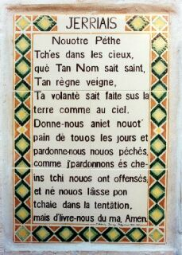

Un Viage en Tèrre Sainte
Chu viage en Tèrre Sainte fut entréprîns par lé Sieur Lé Feuvre en 1951.
Dépis qué j'mé connais, j'avais rêvé d'vaie la Tèrre Sainte! Lé pays ioù qu'Notre Seigneur vit l'jour pour la preunmié fais dans Sa vie sus la tèrre! Lé pays où-est tch'I' vêtchut parmi l's'hommes, et où-est tch'I' fit tant d'bein dans Ses trente et tchiques années dévant subithe le martythe dé la crucifixion pour nouos péchés, pour qué San P'pèe - not' Péthe Bénin à tous - nouos donnîsse la vie êtèrnelle si j'la méthitons, et si j'avons la fouai et la crianche en Li!
Touos les jours qué l'Bouan Dgieu, dans sa grand' miséricorde, m'accordétha sus chutte tèrre, j'Li s'sai r'connaîssant pour m'aver permîns d'mett' les pids en Tèrre Sainte - sanctifiée par la Présence du Seigneur Li-même, et bâptisie par San Sang précieux. Tchi souffrances tch'Il enduthit pour nous sus l'Golgotha à Jérusalem! Tchi privilège d'êt' pèrmîns d'suivre ses pas dans l'C'min d'la Crouaix! I' n'est pas donné à tout l'monde dé l'faithe dévant mouothi - et j'sis si r'connaîssant d'aver 'té iun des privilégiés qué j'm'en vais vouos raconter, du mus qué j'peux, man viage dans les pays appelés d'nouos jours Israël, Lé Jourdain, La Syrie et Lé Liban - la “Tèrre Sainte” des temps biblyiques.
Mé r'véla en mé acouo eune fais - et j'm'y pliais bein! Ch'est drôle comme nou s'accouôteunme à la vie à bord d'un navithe!
J'avions à peine tchitté la caûchie à Marseille quand j'viyais un bieau châté en d'houors dé la rade. J'lé r'gardais à travèrs dé mes longues-veues quand j'mé sis rappelé qué ch'tait l'châté d'If, que j'viyais, lé châté dans tchi qué l'fanmeux Monte Cristo fut prisonnyi!
J'sis si content d'êt' en mé qué j'ai dêjà c'menchi à oublier tout l'embarras qu'j'ai ieu d'vant monter à bord du "Champollion", chu bieau baté Français ichîn tchi s'en va nouos porter toute la londgeu d'la Méditerranée à Haïfa pour vaie la Tèrre Sainte. L'embarras d'tchitter Jèrri pour v'nîn tout l'travèrs dé la France pour prendre lé baté à Marseille, et pis la longue attente sus la caûchie d'chu port-là pour aver la Douane à examinner mes bagages - un tas d'jannes Êgyptiens, Libanais, Jourdainais, Syriens et Juis à l'entou d'mé à bailli d'lus becque à tue-tête dans les langages dé lus pays - les porteurs dé bagages à lus entr'chicangni pour vaie l'tché qui portéthait l'pus d'bagage pour lé pus d'monde pour lé pus d'sou pôssibl'ye! Et mé l'seul Jèrriais parmi tout chu tîntamarre-là!
Man compangnon d'cabinne est un janne docteu Français. I' pathaît charmant. Il 'tait bein content d'vaie qué jé n'tais pon Êgyptien ou Arabe, ou tchiquechose dé même! Il m'a dit tch'i' n'avait pon rencontré d'Jèrriais d'vant, mais qu'jé n'pathaissais pon fort sauvage! Ch'est seux qu'j'allons accorder comme des clioches!
D'bouanne heuthe hièr matin j'passîmes par les Bouoches dé Bonifacio, entre la Corse et la Sardaigne, et j'entrîmes dans la Mé Tyrrhénienne. J'eunmes eune belle veue des côtes des deux îles. En r'gardant la Corse auve mes longues-veues, j'pensais au fanmeux Napoléon, né à Ajaccio, pas bein liain d'ioù qué j'tions. Ch'est seux tch'il aimait la tèrre qué j'viyais d'vant mé - comme j'aime la tèrre des Landes dé Saint Ouën!
Dé vièrs quatre heuthes à matîn j'nouos sommes lévés pour vaie l'fanmeux volcan - Stromboli. I' m'fait penser à un gros bouanhomme assis dans la mé à feunmer sa pipe et êcopi du feu! Longtemps d'vant arriver auprès du volcan, nou vait comme si ch'tait deux rouoges ribans suspendus dans l'ciel, et couronnés d'eune fliambe dé feu êcliatant et tourbillonnant d'temps en temps. À m'suthe qué not' navithe appréchait du volcan nou viyait bein que chein tchi pathaissait comme des ribans d'feu 'taient des p'tites riviéthes dé lave tchi d'vallaient sans arrêt d'la goule du volcan jusqu'à la mé! V'là tchi valait la peine dé vaie, man bouanhomme! Justément comme lé feu pathaissait bein assis dans l'cratère il sembliait qu'eune agence învisibl'ye y tchulbutait eune grand' pal'tée d'tchèrbon tchi l'faisait fliamber tchiques chents pids en l'air - et pis la fliambe dispathaissait dans la niet, et l'feu èrquémenchait à pétilyi trantchil'ment! Ch'tait un spectacl'ye impressionnant - et nou-s-éthait quâsi voulu arrêter l'navithe pour né l'pèrdre pon d'veue!
Nou vait d'belles choses en Méditerranée. En pâssant à travèrs du Dêtrait d'Messine, la côte d'la belle Italie est à gauche, et la Sicile à drouaite. Si l'objet dé ch't histouaithe n'était pas un r'cit d'man viage en Tèrre Sainte, j'pouôrrais vouos pâler des bieautés des côtes dé touos ches pays qu'nou vait - mais v'là tchi prendrait trop longtemps!
En pâssant, la ville dé Messine, en Sicile, est supèrbe à vaie! Nou n'dithait janmais qu'ou' fut dêtruite par un trembliément d'tèrre dé not' temps. J'mé r'souveins d'en aver liu lé r'cit dans les gâzettes quand j'tais mousse! Nou vait l'volcan d'Etna, étout - mais il est trantchil'ye à ch't heu'. L'Italie, à la gauche, est montangneuse - et la ville dé Reggio pathaît bein à l'abri au pid des montangnes.
Eune fais hors du Dêtrait, j'allons êt' à bein prés dans l'mitan d'chu but ichîn d'la Méditerranée, entre l'Asie Mineure et la Turtchie. Quand j'nouos lév'thons mêcrédi matîn, j'dév'thions êt' dans l'port dé Haïfa, et la Tèrre Sainte es'sa d'vant nous! Nou n'peut quâsi pas craithe qué nou s'en va rêéllement la vaie! Dépis qu'nou liêsait l's'Êvangiles et qu'nou-s-apprenait ses léçons à l'école du dînmanche à l'Êgl'yise dé Saint George, à St. Ou, les noms des pliaiches ioù qu'Notre Seigneur démeuthait et hantait ont vêtchu dans nos esprits et nouos mémouaithes, et nou-s-avait tréjous ieu l'espéthance d'aller les vaie! Ch'est auve un esprit d'èrconnaissance et d'révérence qué j'attendons la preunmié veue dé chutte Tèrre Bénie ioù qué l'Seigneur daingnit vivre et mouothi!
Dé Haïfa, par Lé Mont Carmel, à Nazareth
Haïfa! Tchi belle ville, veue d'la mé! Oulle est située au sèr-vouét d'la Baie d'St. Jean d'Acre, et bâtie sus la pente d'eune montangne, comme l'est St. Pièrre Port en Dgèrnési. La ville qué nou vait d'la mé est modèrne - nou n'vait même pas rein d'la vielle ville.
Ouaithe qu'ou sait ville d'ancienneté, Haïfa n'est pon mentionnée dans la Bibl'ye, à ch'qu'i' pathaît - à mains qu'ch'es'sait souos un aut' nom - mais oulle est dév'nue iun des grands ports du nouvieau pays d'Israël. Not' pélérinnage à travèrs dé la Tèrre Sainte s'en va nouos m'ner dans bein des pays d'la Palestinne des temps biblyiques.
J'avions à peine mins l'pid à tèrre quand un agent vînt à not' rencontre auve deux grands autobus, et j'ramontînmes eune belle route sus la pente dé la montangne appelée Lé Mont Carmel. Ch'tait sus chutte montangne-là qué l'Prophète Élie assemblyit l'peupl'ye d'Israël, auve les quat' chent chînquante prêtres dé Baal, pour lus prouver qué les Dieux dé Baal 'taient faux, et tch'i' fît d'scendre lé feu du ciel pour brûler l'sacrifice tch'il avait prépathé sus un autel pour l'ouffri au Bouan Dgieu. (L'histouaithe est êcrite au long dans la Bibl'ye - preunmié Livre des Rouais, chapitre dgiex-huit, vèrsets iun à quarante.)
Arrivés sus l'haut du fanmeux Mont Carmel, j'entrînmes dans l'couvent des "Pères Carmes". Du haut du couvent nou vait eune belle veue du pays êtendu en d'ssous - St. Jean d'Acre au liain et à drouaite, et Haïfa à bein prés quat' chent chînquante pids en d'ssous d'nous. Dans l'églyise du couvent, nou vait la cave ioù qué l'Prophète Élie soulait d'meuther quand il 'tait sus l'Mont Carmel.
Dans lé p'tit gardîn en d'vant du couvent, eune pétite pyramide en pièrre machonnée auve eune crouaix en fé d'ssus, couvre l'ôssuaithe des soudards dé Napoléon tués sus l'Mont Carmel en dgiex-sept chent nonante-neu'.
Nou-s éthait quâsi voulu passer d's heuthes à la fraîcheu sus l'haut du Carmel, mais fallait r'monter en carrosse car j'voulions êt' à Nazareth en temps pour dîner, et l'y-avait vingt-trais milles à l'y-aller. À bein prés à maîntchi c'mîn du Carmel à Nazareth, j'nouos trouvînmes à côté d'la riviéthe Cison, appelée “La Riviéthe du Machacre" par les Arabes viyant qué ch'tait d'dans qué l'Prophète Élie envyit les corps des prêtres dé Baal auprès tch'i' l's'avait tués! Les Mameluks tués par les soudards dé Napoléon à la batâlle du Thabor y fûtent envyés étout. En temps d'ôrage, l'y-a un fort couothant, et touos ches cadâvres-là 'taient entraînés à la mé!
Nou c'menche à vaie la Montangne du Précipice, et, un p'tit pus liain, lé fanmeux Mont Thabor. La Montangne du Précipice est chette-là tch'est mentionnée dans l'vîngt-neuvième vèrset du quatrième chapitre dé St. Luc, et dé d'ssus tchi les Juîs d'Nazareth voulaient fliantchi Notre Seigneur un jour dé Sabbat, viyant tch'il' 'taient jaloux d'Sa connaîssance des Êcrituthes. Lé Seigneur avait eune trentaine d'années dans chu temps-là. Il avait fait les savants mârri dans lus synagogue. Il lus dît sans doute des véthités tch'i' n'aimaient pon ouï! J'appréchons d'Nazareth. A not' gauche, j'viyons l'bieau p'tit village dé Japhie, mentionné dans l'douzième vèrset du dgiex-neuvième chapitre dé Josué. J'sommes dans un pays montangneux, et i' fait hardi caud. Jé c'menchons à d'scendre, et tout d'un coup, arrivés à un dêtou dans la route, la belle pétite ville dé Nazareth est êtendue d'vant nous, au nord-êt! Dans la route, nou c'menche à vaie l's Arabes aller et v'nîn. Nou r'connaît l's habits qu'nou-s a veu dès sa jannesse sus les gens dans les portraits des pliaiches dé la Bibl'ye dans les livres à l'êcole du dînmanche!
Nazareth et Cana en Galilée
Ieune des choses tchi m'impressionnit l'pus à Nazareth 'tait la fontaine ioù qu'les femmes vont qu'si d'ieau. Ch'est la même fontaine tch'était là dans l'temps qu'Notre Seigneur 'tait p'tit garçon, et ch'est seux tchi l'y-allit auve Sa m'mèe bein des fais! Les femmes d'à ch't heu' sont habillies d'la même faichon qu'les femmes dé chu temps-là. I' portent l'ieau dans eune cruche sus l'haut d'lus tête comme i' l'ont fait pour pus d'deux mille ans! Quand la cruche est viède, i' la portent touannée sus l'côté, mais quand oulle est plieine i' la portent début sus l'haut d'la, tête-et i' marchent si drait tch'i' n'en pèrdent janmais un d'gout!
Ch'est tous d's Arabes qué nou vait à Nazareth. I' sont bein trantchiles et assez respectueux. L'y-a, comme dans touos les pays d'Orient, d's'îndividus tchi veulent tréjous vouos vendre tchiquechose, souo-disant à miyeu marchi qu'nou n'pouôrrait l'acater dans les boutiques - mais il' ont peux d'la police et s'êcartent quand i' vaient un agent d'police appraichi! L'hôtel à Nazareth n'avait pas assez d'run pour nouos louogi tous, ch'est en tchi j'fûnmes invités à couochi dans l'grand Monastéthe des Franciscains.
Ch'est assez drôle quand nou pense qué Nazareth n'est pon mentionné dans l'ancien Testament, mais ch'est eune ville tch'est dév'nue célèbre viyant qué ch'tait là qué d'meuthait la Vièrge Marie, et l'Seigneur y passit Sa jannesse jusqu'à l'âge dé trente ans! A preunmié veue, nou peut dithe qué ch'est eune belle pétite ville. Êtendue au pid des montangnes, ses belles pétites blianches maîsons sont entouothées d'oliviers.
Arrivés en ville et installés dans l'couvent des Franciscains, jé c'menchînmes à visiter les saints lieux. En d'ssous d'l'Églyise dé l'Annonciation, j'descendînmes vaie la cave ioù qu'l'Ange Gabriel vînt vaie la Vièrge Marie et li'annoncit qu'oulle allait êt' la m'mèe dé Notre Seigneur (St. Luc, chapitre 1, vèrsets 26-38). Et pis j'entrînmes dans l'Églyise appelée "L'Églyise dé la Nutrition" ou "Maîson dé St. Joseph ". En d'ssous dé ch't'églyise-là est la grand' cave où-est qué l'Seigneur démeuthait et tchèrpentait auve St. Joseph et Sa m'mèe.
En liêsant chennchîn, ou' trouv'thez p't'êt' ch'la drôle qué ch'tait dans des caves qué les gens d'meuthaient dans l'temps dé Notre Seigneur. Eh bein, l'y-en avait sans doute tchi d'meuthaient dans des maiethons étout - mais les pouorres gens faîthaient sèrvi les souos-tèrrains et les caves naturelles qué nou trouve dans des pays ioù qu'l'y-a des montangnes. I' n'faut pas oublier tch'i' fait hardi caud en Galilée, comme partout en Tèrre Sainte, et la cave avait l'avantage d'aver un air frais qu'nou n'pouvait pon trouver dans les maiethons!
Eune autre églyise qué j'allînmes vaie, étout, est l'églyise des Grecs Catholiques tch'est bâtie sus l'empliaichement traditionnel dé la synagogue ioù qu'Notre Seigneur fit màrri les Juis un jour dé Sabbat, à la siette dé tchi i' voulaient L'fliantchi ava l'Mont du Précipice, tch'est à bein prés à un mille dé Nazareth.
Dé Nazareth, j'nouos mînmes en c'mîn pour lé Lac dé Tibériade, appelé La Mé d'Galilée dans l'temps d'Notre Seigneur, et tch'est à eune vîngtaine dé milles dé Nazareth. En c'mîn, j'nouos arrêtinmes à Cana dé Galilée, où-est qué l'Seigneur fît San preunmié mithacl'ye quand Il 'tait à des neuches auve Sa m'mèe, et tch'I' touannit d'l'ieau en vîn quand i' lus trouvîtent à court dé vîn (St. Jean, ch. 2, v. 1-12). Ch'est un drôle dé p'tit village Arabe auve des rues êtraites. J'allînmes vaie l'appartément même où-est qué l'mithacl'ye fut fait. Il est en d'ssous d'la Basilique dé Cana.
Lé Lac Tibériade
Lé bieàu Lac Tibériade! La Mé d'Galilée où-est qué l'Seigneur aimait sans doute aller à la pêque! Dévant y'arriver, j'vînmes, à not' gauche, la montangne sus tchi l'Seigneur s'assiévit, et ioù tch'I' rassâsyit quat' mille pèrsonnes, sans pâler des femmes et d's'êfants, auve sept pains et tchiques pétits paissons! (St. Matchi, ch. 15, v. 29-38.)
Saint Matchi nouos dit qué Notre Seigneur, v'nant dé Tyr et dé Sidon, arrivit à la Mé d'Galilée et s'assiévit sus chutte montangne-là, et qu'eune grand' foule dé gens, tch'avaient parmi ieux des cliopîns, d's aveugl'yes et d's êstropiés et des muets, vîntent lé vaie, et I' dgéthit touos ches pouorres malades-là! La foule dé monde, êmèrveillis, restit alentou d'Li pour trais jours dé temps! Lé traisième jour, i' n'avaient pus rein à mangi, et ch'tait dans chu temps-là tch'I' les rassâsyit auve les sept pains et deux-s'trais p'tits paîssons!
La veue du lac, à m'suthe qué nou-s en appraiche, est divèrsément belle. Les montangnes tout à l'entou sont hautes, et nou vait l'ieau, bliue et calme, dé temps en temps comme nou d'vale la route à travers des montangnes. Lé lac a à bein prés treize milles dé long, et siex milles dé laize, et eune profondeu dé pus d'chent pids dans l'mitan - et est au mains chînq chents pids en d'ssous du nivé d'la Méditerranée! La fanmeuse riviéthe du Jourdain s'êcoule dédans. Il a 'té appelé "La Mé d'Génésareth" étout, mais ch'est par lé nom d'La Mé d'Galilée qu'les Chrêtiens lé connaîssent lé mus, car ch'est l'nom qu'nou-s a apprîns à connaître à l'école du Dînmanche.
Nou n'dithait pon à l'vaie qu'l'ieau dans l'lac peut êt' rude, et pourtant la Bibl'ye nouos dit (St. Matchi, ch. 8, v. 23-26) qu'un jour lé Seigneur et Ses discipl'yes, dans un bâté, lus trouvîtent dans eune tempête sus l'lac, et qué Ses discipl'yes eûtent eune telle fichue peux tch'i' fûtent obl'yigis d'Lî d'mander d'les sauver, et quand I' pâlit au vent et ès louêmes, tout s'calmit!
La Bibl'ye nouos raconte dé belles histouaithes au sujet du lac. Ch'tait là, étout, qu'les discipl'yes eûtent grand' peux eune niet tch'i' faîthait mauvais temps, et tch'i' vîtent lé Seigneur marchi sus l'ieau (St. Matchi, ch. 14, v. 24-32). I' criyaient tch'Il 'tait un r'vénant, et Il eut à les rasseûther! L'y-a tréjous ieu un tas d'paîsson dans l'lac, et l'y-en a acouo tout pliein d'dans au jour d'anniet.
Capernaüm
Un p'tit pus liain qu'la ville dé Tibériade, allant Nord, sé trouve la p'tite ville dé Magdala, où-est qu'Marie Magdelaine démeuthait. Ch'tait dans ches parages-là, étout, qué s'trouvait la ville dé Bethsaïde, qué Notre Seigneur visitait souvent. Enfin, nouos v'la arrivés ès ruinnes dé Capernaüm, ioù qué l'Seigneur pâssit eune bouanne partie d'Sa vie. I' n'l'y-a pon eune aut' ville ioù tch'I' fît tant d'discours comme dans chette-là - ni tant d'mithacl'yes.
Les ruinnes dé la vielle synagogue des Juis, ioù qué l'Seigneur enseignait (St. Jean, ch. 6, v. 26-70), sont acouo là. Maûgré touos les mithacl'yes et tout l'bein tch'I' fît à Capernaüm, l's habitants lus touannîtent contre Li, et ch'tait auve eune tristesse touchante tch'I' tchittit la ville pour s'en aller en Judée, quand I' dit: "Et té, Capernaüm, tch'as 'té loùsée jusqu'ès cieux-tu s'sas mînse pus bas qu'l'enfé! " (St. Matchi, ch. 11, v. 23). L'Histouaithe nouos raconte qué mains d'un siécl'ye auprès la mort du Seigneur, la ville 'tait dév'nue un vrai sodôme - et quand nou vait les ruinnes au jour d'anniet, nou n'peut pon sénon penser qué la prophétie du Seigneur a 'té bein justifiée!
Ch'tait auve èrgret qué j'tchittînmes Capernaüm, mais l'arlévée 'tait avanchie et il 'tait temps d's'èrmett' en c'mîn pour Nazareth, où-est qu'j'allions pâsser not' preunmié niet en Tèrre Sainte-et l'pays 'tait si bé qué j'voulions l'travèrser dévant qu'la niet vînsse!
Lé Mont Thabor
J'avons ieu eune niet bein trantchille dans l'Monastéthe des Franciscains à Nazareth, et l'Supérieur nouos a souhaité bouan viage et bouanne chance à matîn, et pis j'nouos en sommes allés à l'hôtel pour dêjeuner. J'ai rmèrtchi qué l's'oeufs d'poule qué j'avons ieu - bouoillis - 'taient bein p'tits. Ch'n'est pon ravissant quand nou vait les pouorres poules, maigres comme des haches, êprouver à gratter pour tchiquechose à mangi parmi les pièrres et l'ponsi d'un pays aussi caud et montangneux comme ch'tî-chîn, brûlé par un solé tch'est si âpre tch'i' vouos fait comprendre pourtchi qu'les Arabes sont si enfliubés dans des robes tch'i' sembl'ye qué nou n'lus vait qué l'but du nez!
Noues v'là en cârrosse, et en c'mîn pour Jérusalem - mais en nouos en allant j'allons monter sus l'haut du Mont Thabor, tchi n'est qu'à eune quarantaine dé minnutes dé Nazareth.
En sortant d'Nazareth, j'avons pâssé acouo eune fais par la Fontaine dé la Vièrge, et j'nouos y sommes arrêtés pour la dreine fais à r'garder les femmes emplyi lus "cruches" et les mett' sus l'haut d'lus têtes!
Arrivés au pid du Mont Thabor, j'avons arrêté justément au d'ssus du village dé Dabouriyem. Dans la Bibl'ye (Josué, ch. 21, v. 28), lé village est appelé la "Ville dé Dobrath, de la tribu d'Issacar". D'après eune ancienne tradition, ch'tait ichîn qué l'Seigneur laîssit neuf dé ses Apôtres quandi tch'I' montit l'Mont Thabor, où-est tch'I' fut transfidguthé en présence des Apôtres Pièrre, Jacques et Jean (St. Mar. ch. 9, v. 2). Ch'tait quand I' r'descendit dé d'ssus l'Mont à Dobrath tch'I' chassit l'démon sourd et muet d'un janne homme tchi l'avait ieu dé d'pis sa naissance.
Lé Mont Thabor s'êléve au ciel comme un autel au Seigneur. Il a eune hauteu dé pus d'giex-huit chents pids du nivé d'la Méditerranée. Ch'est eune belle montangne. Par sa r'nommée biblyique, sa belle forme, sa végétation r'mèrquabl'ye et san panorama supèrbe, oulle est vrainment la pus belle des montangnes d'Israël! Lé c'mîn pour monter du bas au haut sèrpente en zigzags sus iun des fliancs, et nou-s y monte, huit à la fais, dans un moto (type "Jeep") cachi par iun des mouaines Franciscains tchi d'meuthent sus l'haut d'la montangne. L'y-a deux belles églyises sus l'haut, ieune pour les Franciscains, et l'aut' pour les Grecs Orthodoxes.
Du haut du Thabor, la veue est ieune des pus belles qué nou piêsse vaie en Tèrre Sainte. La montangne a eune èrnommée tout à fait împortante pour les Chrêtiens, viyant qué, traditionnellement, ch'tait (comme j'vouos l'disais pus haut) là qué la Transfidguthation du Seigneur eut lieu (St. Luc, ch. 9, v. 28-36). Même lé Psalmiste en a fait mention quand i' dit : "Thabor et Hermon sé rêjouissent en Tan nom" (Ps. 89)! La tradition d'la Transfidguthation existe dépis les temps Apostoliques.
Lé Mont a veu un tas d'batâles. L'y-en a ieune dé mentionnée dans l'quatrième Livre des Juges, et l'y-en a ieu bein des pièches dépis chette-là jusqu'au temps des Crouaîsades. Nou-s éthait voulu y pâsser des jours, sus l'Thabor, mais fallait s'èrmett' en c'min. Ch'tait auve èrgret qu'nou l'viyait s'êlouangni à m'suthe qué nou continnuait lé c'mîn sus la route dé Jérusalem!
Tchi pays montangneux! I' m'semblyait qu'nou-s en n'tait tréjous entouothés! Lé Mont Thabor sé trouve dans la Galilée du temps dé Notre Seigneur. J'pâssînmes la frontchiéthe dé la Galilée en Samarie dévant nouos arrêter pour mangi eune bouochie, et j'travèrsînmes toute la Samarie. L'arlévée 'tait dêjà avanchie dévant arriver à Lydda, la dreine grand' ville dévant vaie Jérusalem. Lydda est eune ville historique qué nou vait souvent mentionnée dans l'Ancien Testament. Dé nouos jours ch'est l'tèrminus pour les avions tch'apportent les visiteurs pour Jérusalem.
Jerusalem
J'appraichons d'Jérusalem par la route dé Jaffa, à l'Ouêst dé la ville. Jusqu'ichîn j'n'avons pas tchitté l'pays d'Israël. Eune fais qué j'l'éthons tchitté jé n'pouorrons pon y r'vénîn - ch'est viyant qu'Israël est acouo nominnal'ment en dgèrre auve les pays d'à l'entou. La paix n'a pas acouo 'té sîngnée, et nouos pâsseports nouos pèrmettent seulement un pâssage en Israël. I' faut qué j'viyons tout ch'qu'i' l'y-a à vaie dans la partie Israëlite dé Jérusalem dévant travèrser la frontchiéthe du Jourdain, rouoyaume du Rouai Abdallah.
Ch'est des bâtiments modèrnes qué j'viyons partout en entrant. Nou s'craithait quâsi dans eune ville Améthitchaine! Pourtant, ch'est Jérusalem, lé même Jérusalem qué l'Seigneur Li-mème èrgardit, les lèrmes ès ièrs - pas longtemps d'vant d'y-être crucifié - quand I' s'arrêtit en c'mîn et s'fit : "O! Si tu connaissais au jour d'aniet les choses tch'appartcheinnent à ta paix! Mais à ch't heu' i' n't'est pas donné d'les vaie! Car les jours veindront qu'tes enn'mîns t'entouoth'thont d'tranchies, t'enfreunm'thont et t'êteindront dé touos les côtés, et t'râs'sont à nivé d'tèrre, té et tes êfants - et i' n'té laîs'sont pas eune pièrre l'eune sus l'autre!"
J'nouos arrêtons à l'Înstitut Franciscain dé Notre Danme dé France, et j'sommes pèrmîns d'monter sus l'ief. Chutte fais, la vielle ville dé Jérusalem, entouothée d'muthâles, s'êtend d'vant nous!
Ch'est vrai qu'la cité, si sanctifiée par les êvènements tragiques dé la vie du Seigneur, ne pathaît pas comme j'l'avais înmaginnée! J'avais tréjous envisagi eune vielle ville sus un bas tèrrain, auve un mont à côté sus tchi qu'nou pouvait quâsi s'înmaginner vaie trais crouaix - lé Golgotha d'la Crucifixion! Mais ch'est tout d'même eune ville difféthente, qué j'viyons - difféthente à autcheune aut' qué j'avais jamais veu - eune veue qué j'noubliêthai janmais!
D'ichîn - j'sommes à la carre du nord-vouêt d'la muthâle dé la vielle ville Arabe dé Jérusalem - j'viyons l'Églyise du Saint Sépulcre, l'arche centrale dé la Porte d'Antonia, ioù qu'Ponce Pilate condâmnit l'Seigneur à mort - l'empliaichement du Templ'ye du Rouai Salomon - d's églyises, synagogues et sanctuaithes dé toutes les sortes! Au nord-êt, en d'houors de la muthâle, la belle cathédrale dé Saint Georges (cathédrale Anglicanne), justément en d'ssous du Mont Scopus - à l'êst lé Mont des Oliviers, auve eune belle églyise dans l'Gardîn d'Gethsémané. Tchi panorama! Încompathabl'ye à autchun autre au monde!
I' faut nouos r'mett' en cârrosse. Dans l'quartchi Juis né v'là des hôtels modèrnes et des belles larges rues, mais j'n'avons pas l'temps d'nouos arrêter, car nouos v'chîn au Saint Cénacl'ye. Suivant eune vielle tradition des Musulmans, ch'est dans l'bâtisse du Cénacl'ye tch'est l'tombé du Rouai David. Pour les Chrêtiens, l'Cénacl'ye est iun des lieux les pus saints au monde, car ch'est là tch'est l'appartènement chouaîsi par Notre Seigneur pour lé Drein Souper. Ch'tait là qu'la Sainte Eucharistie fut înstituée. Ch'tait là qu'auprés la mort du Seigneur les Apôtres sé r'fugiaient - et ch'tait là qué, la séthée d'la Résurrection, lé Seigneur pathut d'vant ieux ouaithe qué l's us 'taient clios!
Ni l'êvangile ni la tradition né nouos ont transmîns lé nom du génétheux propriétaithe du Cénacl'ye dans l'temps dé Notre Seigneur, mais nou peut dithe en toute véthité qué l'appartènement chouaîsi d'vînt la méthe dé toutes les églyises apostoliques, dépis qué ch'tait là qué d'scendit l'Saint Esprit, qué l'grand mithacl'ye dé la Pentecôte eut lieu, et qué la Succession Apostolique dé la Sainte Églyise dé nouos jours fut c'menchie!
I' faut, à ch't heu', qué j'tchittons l'pays d'Israël, car touos l's aut' lieux saints s'trouvent dans la ville Arabe dé Jérusalem, et dans l'Rouoyaume du Jourdain. Comme l'y-a acouo êtat d'dgèrre et d'armistie entre ches pays, jé n'pouvons pon entrer et r'sorti d'iun dans l'autre aîsiement et sans un tas d'formalités!
Lé Saint Sépulcre
J'nouos sommes présentés dans l'office d'Înmigration Israëlite pour lus r'donner nouos visas et nouos r'mèrcîments, car i' faut dithe qué j'avons 'té bein r'chus et bein souangnis dans l'pays d'Israël - et pis j'nouos sommes présentés à la frontchiéthe du Rouoyaume du Jourdain. Là j'viyons la police du rouoyaume, habillie en khâki comme les soudards Angliais, sénon tch'il' ont un pitchet sus l'haut d'lus chapé. Les soudards dé la Légion Arabe, c'mandée par Glubb Pascha, sont par les c'mîns.
J'sommes èrchus bein polîment. Dans tchiques minnutes, j'allons entrer dans l'vièr Jérusalem par la porte dé Damas. J'nouos assemblions à la porte, deux à deux, un dgide à la tête. Un agent d'police nouos siet. I' nouos avise dé souangni d'nouos pouchettes, viyant qu'l'y-a des voleurs par les c'mîns!
Ch'est un monde êtrange tchi nouos frappe la veue en entrant! J'sommes dans eune êtraite rue, couvèrte en vèrre (comme lé marchi d'lédgeunmes à St. Hélyi!), tèrpâlin, et autcheune aut' chose tchi peut sèrvi d'couvèrtuthe. En Orient, eune rue couvèrte dé-mème est appelée un “Souk”. L'y-a des boutiques dé châque côté - des boutiques ouvèrtes. Les gens, presque tous Arabes, sont partout dans la rue, et i' faut s'faûfiler parmi ieux du mus qu'nou peut pour avanchi. J'tâchons d'garder ensembl'ye autant qu'pôssibl'ye. L's Arabes sont tchuthieux à vaie. Les femmes ont des vouailes tchi lus couvrent la fache. Nou n'lus vait qué l's ièrs. I' fait grand caud. Nou vait les moûques à l'entou d'la viande tch'est pendue dans les bouochel'lies. L'y-en a un tas partout, d'moûques! Et l'y-a tout pliein d'moustiques étout, mais les gens n'pathaissent pon y prendre avis!
J'touannons à drouaite et j'nouos trouvons dans la rue David, et nouos v'là à la Tour dé David et la Citadelle, près d'la Porte dé Jaffa. I' n'l'y-a autchun trafi par chutte porte-là. Oulle est gardée freunmée ches jours à cause dé l'êtat d'dgèrre entre ches pays-ichîn - dé chu côté-chîn j'sommes en Jourdain, et d'l'aut' côté d'la porte ch'est Israël.
J'sommes bein r'chus à l'Hôtel dé la Citadelle, et j'nouos m'ttons à l'aise dans des chambres modèrnes et bein meubliées, et beintôt j'nouos assiévons à un bouan r'pas sèrvi par des nièrs hommes habillis comme des Turques, auve un fez sus la tête. I' d'visent l'Angliais.
A matîn, j'avons visité la basilique du Saint Sépulcre. Oulle a 'té bâtie sus les lieux où-est qué l'Seigneur fut crucifié, ensev'li et mîns dans la tombe - pour consèrver les lieux pour tréjous. Dans l'temps dé Notre Seigneur, lé Golgotha, la pliaiche sus tchi qué l'églyise est bâtie, 'tait en d'houors dé la muthâle dé Jérusalem, mais dans l'année chent trente chînq, l'Empereur Adrien fit dé Jérusalem eune ville Romaine, et pour dêtruithe et êffachi toute trace dé Christianisme, i' fit bâti sus l'Golgotha un templ'ye païen, dêdié à Vênus et à Cupidon, tchi d'vînt à bein prés l'mitan d'la ville aggrandie dé Jérusalem, tchi s'était êtendue d'chu côté-là.
Chent nénante ans pus tard, Ste. Hélène abattit chu templ'ye-là et r'dêcouvrit l'Golgotha et l'tombé du Christ. I' pathaît qu'touos les soudards en garnison à Jérusalem, et touos les Chrêtiens du pays aîdgîtent à la corvée. Et pis l'Empereur Constantîn fit bâti eune églyise tchi couvrait l'Calvaithe et l'Tombé, pour les préserver à janmais. En siex chent quatorze, les troupes dé Chosroës y mîntent lé feu, et ou' fut restaurée pus tard. L'y-eut divèrses additions à l'églyise dans l'couothant des siécl'yes, et en fin d'compte les Chevaliers des Crouaîsades la finnîtent dé bâti.
La basilique d'au jour d'aniet est à bein prés comme ou' fut finnie par ieux en onze chent quarante-neu - ouaithe qué la rotonde a 'té brûlée d'pis, et r'bâtie, et qu'l'y-a ieu des r'pathations d'temps à autre tch'ont gardé lé d'dans originnal.
La tombe d'Aubigny
Dans l'pavé, à l'entrée d'la Basilique du Saint Sépulcre, un mio à drouaite dé la grand' porte et l'long d'la muthâle, nou vait eune tombe dé grand întéthêt à touos les Jèrriais. V'là tchi' m'fit grand pliaîsi d'ouï not' Aumônier en faithe mention. Ch'est la tombe du Chevalier Philippe d'Aubigny, Précepteur dé Henri trais, Rouai d'Angliétèrre - et Gouvèrneux d'Jèrri au temps jadis. L'y-a un bieau portrait d'la tombe dans l'Bulletîn d'la Sociêté Jèrriaise pour mil neu' chent vîngt-six, pages deux chent souoxante-six et souoxante-sept.
Ch'est chanceux qu'l'êcrituthe sus la pièrre tombale n'ait pas 'té êffachie par les pas dé touos les pélérîns tch'ont marchi d'ssus en entrant dans la Basilique, car ou' soulait êt' en d'vant d'la grand' porte, où'est qu' lé "chevalier" avait voulu êt' entèrré. Pus tard, ou fut mînse un mio à côté là où'est qu'oulle est à ch't heu', pour la prêsèrver, mais l's ôs du Sieur d'Aubigny n'ont pas 'té bouogis. Philippe d'Aubigny arrivit en Orient en douze chent vîngt-deux auve ieune des Crouaîsades, et s'en allit à Jérusalem en douze chent vîngt-huit auve l'Empereur Frédéric deux.
En mil huit chent dgix, les Musulmans dêtruisîtent toutes les tombes des rouais et "chevaliers" latîns tchi' pûtent mett' la main d'ssus, mais la cheinne d'Aubigny en êcapit viyant qu'oulle 'tait muchie souos un banc en machon'nie tchi sèrvait d'siège ès gardgiens d'la grand' porte dé la Basilique.
Dans la Basilique
En entrant dans la Basilique, la preunmié chose qué nou vait est la Pièrre d'Onction, un rectangl'ye dé rouoge pièrre du pays, tchi couvre lé rotchi sus tchi qué l'corps du Christ fut pliaichi et embaûmé et oint dévant êt' mîns dans la tombe.
Comme j'vouos l'disais, l'églyise du Saint Sépulcre est bâtie sus l'empliaichement du Golgotha et du Tombé du Seigneur. Quand nou-s est en d'vant d'la Pièrre d'Onction et qu'nou r'garde à drouaite, tout prés d'l'entrée, nou vait eune montée dé dgiex-huit d'grés tchi mène dans la Chapelle du Calvaithe, bâtie d'ssus et à l'entou du Mont Golgotha. En montant chutte montée-là, nou-s a l'împression d'êt' dans un aut' monde ; i' sembl'ye qué nou c'menche à rêaliser qué nou-s est sus l'pas d'la porte d'la pliaiche la pus sacrée et sanctifiée au monde - théâtre du supplice, théâtre des dreinnes scènes dé la Passion dé Notre Seigneur Jésus-Christ, dé tchi qu'les quatre êvangélistes nouos ont donné un si bouan r'cit.
Lé Sanctuaithe du Golgotha est divisé en deux allées ou chapelles par deux gros pillièrs. La cheinne du sud appartcheint au rite Latîn, et la cheinne du nord au rite Grec Orthodoxe. Un mio à drouaite, au haut d'la montée, nou vait la pliaiche où'est qué l'Seigneur fut d's'habilli et qu'Sa robe sans couôtuthe fut donnée ès soudards romains, tchi la râfflyîtent. Là, où'est qu'est l'autel, dans l'est d'la chapelle, I' fut clioué sus la Crouaix - la pus tèrribl'ye dé toutes les cruautés tchi piêsse y'aver au monde!
À gauche, là où'est qu'est l'autel Grec Orthodoxe, la Crouaix fut butée dans un creux sus l'haut du rotchi. L'aithe souos l'autel est couvèrte en marbre, et eune rîndelle en argent est pliaichie dans la marbre justément en d'ssus du creux. Nou peut mett' la main l'travèrs dé la rîndelle et touchi l'rotchi. Des deux côtés, et un mio en driéthe du creux ioù qu'la Crouaix du Seigneur fut butée, l'y-a deux rondasses en néthe marbre tchi montrent où'est tch'étaient les crouaix des deux malfaiteurs crucifiés en même temps qué Notre Seigneur.
À drouaite dé l'empliaichement des trais crouaix, entre les deux autels dé la chapelle, nou vait la fente du rotchi faite par lé trembliément d'tèrre au moment du drein souper dé Notre Seigneur sus la Crouaix.
Dans chu saint lieu-là, teinmoin dé tant d'souffrances, j'nouos agenouoillînmes tous quandi qu'not' Aumônier dit eune priéthe - un moment bein solonnel pour touos nous.
Èrdescendus d'la Chapelle du Golgotha, au pid des d'grés et au nivé d'l'aithe prîncipale dé la Basilique, j'entrînmes dans la Chapelle d'Adam, souos la cheinne du Calvaithe. Oulle est appelée la Chapelle d'Adam viyant qué l's'orateurs Chrêtiens dès l'preunmié siécl'ye ont fait compathaison entre Adam, l'preunmié homme, en tchi touos l's'hommes avaient péchi, et lé Nouvel Adam du Golgotha, en Tchi touos l's'hommes ont r'trouvé l'pardon et l'salut.
Au fond d'la chapelle à l'est, tch'est justément en d'ssous d'la pliaiche où'est qu'la Crouaix du Seigneur fut butée, nou vait la continnuation d'la fente du rotchi faite par lé trembliément d'tèrre.
Ch'est dans chutte chapelle ichîn tch'avaient 'té entèrrés Godefroy de Bouillon - tchi 'tait à la tête du Royaume Latîn dé Jérusalem (auprès l'arrivée des Crouaîsades), dé dgiex chent nonante-neu' à onze chent - et Baudouin preunmyi. Baudouin fut rouai dé onze chents à onze chent dgiex-huit. Deux bancs en pièrre montrent l'empliaichement des sépultuthes. I' pathaît qué Baudouin deux (onze chent dgiex-huit à onze chent trente-ieune) et Foulkes d'Anjou (onze chent trente-ieune à onze chent quarante-quatre) fûtent entèrrés dans la chapelle étout, mais nou n'y vait pon d'traces dé lus tombieaux au jour d'aniet.
En sortant d'la Chapelle d'Adam, nou continnue tout drait, pâssé la Pièrre d'Onction, et à travèrs eune arche à drouaite nou vait l'Saint Sépulcre dé Notre Seigneur. Il est au mitan d'la rotonde dé la Basilique. Lé Sépulcre même est entouothé d'eune pétite chapelle en forme rectandgulaithe, hardi ornée. En d'vant, à l'entrée, l'y-a un tas dé p'tits pilièrs, des lampes tchi r'sembl'yent hardi à des crâssets du temps jadis, et des grands hauts changlièrs auve des chandelles dans l'haut, comme nou vait tchiquefais dans des sanctuaithes d'églyises. Les lampes et les changlièrs ont 'té mîns là par les églyises Grec Orthodoxe, Catholiqùe Romaine, et Copte.
Lé d'dans du Saint Sépulcre est divisé en deux appartènements. Dans l'preunmyi, l'y-a un morcé d'la pièrre tchi fut roulée en d'vant d'l'entrée du Sépulcre pour lé bouchi (St. Mar, ch. 15, v. 46). Chutte pièrre-là 'tait en forme dé meule, pour pouver la rouler aisiement. Chutte partie-là du Sépulcre est appelée "La Chapelle dé l'Ange", viyant qué ch'tait là qu'l'Ange, assis sus la pièrre en forme dé meule, annoncit à Marie Magdelaine et ès aut' femmes tch'étaient auve lyi qué l'Seigneur était ressuscité (St. Matchi, ch. 28, v. 2).
Dans la deuxième partie du Sépulcre, nou vait la pliaiche où'est qué l'corps du Christ èrposit dépis l'preunmié Vendrédi Saint jusqu'au preunmyi Lundi d'Pâques. Lé rotchi même, sus tchi qu'était l'corps du Seigneur, n'est pas visibl'ye, car i' fut nécessaithe dé l'couvri auve des dalles dé blianche marbre pour lé prêsèrver. L'y-a eune tchînzaine dé lampes pendues au pliafond du Sépulcre.
Tout près du Saint Sépulcre sé trouve la Chapelle dé Ste. Marie Magdelaine. Oulle est à la pliaiche traditionnelle où'est qu'Marie Magdelaine sé touannit d'bord et vit l'Seigneur ressuscité sans Lé r'connaitre, criyant tch'Il 'tait l'gardinnyi (St. Jean, ch. 20, v. 15). Au fond du Sanctuaithe dé Ste. Marie Magdelaine, l'y-a eune pétite montée tchi condit dans eune aut' chapelle ioù tch'est prêservé un mio d'la colonne à tchi qué l'Seigneur fut amathé dans l'Prétoire de Pilate pour aver des laches dé fouet (St. Jean, ch. 19, v. 1).
Dans eune aut' partie d'la Basilique, pas liain d'la Chapelle du Golgotha, s'trouve la cave où'est qu'les crouaix du Seigneur et des malfaiteurs fûtent enfouies tout d'suite auprès la Crucifixion, viyant qué, d'après la louai Juive, i' fallait les d'valer et les mett' hors dé veue d'vant l'jour du Sabbat - tch'était l'lendemain d'la Crucifixion.
Quand Ste. Hélène vînt à Jérusalem à la r'chèrche des crouaix, l'êvêque dé Jérusalem dé chu temps-là, connaîssant les louais et l's'usages des Juis, savait qué pour les trouver i' faudrait chèrfouoilli avant dans la tèrre à l'entou du Golgotha, et les trais crouaix fûtent trouvées dans chutte cave-ichîn, tch'avait 'té remplyie d'tèrre et d'débris. La cave est appelée la "Chapelle de l'Invention de la Croix” à ch't heu, et appartcheint ès Catholiques Romains. L'autel tch'est d'dans est un don dé l'Archiduc Maximilien, tchi d'vînt Empereur du Mexique.
Nou pouôrrait passer eune semaine dans la Basilique du Saint Sépulcre. Oulle est si vielle - si plieine dé mémouaithes dé la Passion et la Rêsurrection dé Notre Seigneur. L'y-a tréjous eune fouaibl'ye odeu d'enchens, tchi pathaît laîssi un parfum sanctifié dans ses sanctuaithes. Les sèrvices qué nou-s y vait pathaissent drôles au pélérîn occidental. Les Grecs Orthodoxe, Catholiques Romains, Arméniens et Coptes ont lus chapelles à part, et il' ont des sèrvices en allant à lus divèrs autels - souvent en même temps.
Les mouaines Franciscains sont enchèrgis par l'églyise Catholique Romaine d'êt' les gardgiens dé touos les lieux saints contrôlés par ch't' églyise-là en Tèrre Sainte. I' sont dêvoués à l'oeuvre, et font lus tâche d'eune manniéthe admithabl'ye. Châque jour, à quatre heuthes dgix d'l'arlévée, les Religieux du Saint Sépulcre, et les pélérîns et fidèles généralement tchi s'trouvent à Jérusalem, vont en procêssion ès divèrs sanctuaithes dé la Basilique, chantant les louanges dé l'Êtèrnel, et l'priant pour touos les Chrêtiens d'l'Univèrs. Ès autels dé touos les sectes, lé parfum d'enchens et des priéthes des fidèles monte quotidiennement au Trône de Grâce!
Dans un pays si brûlé du solé qué l'air même qué nou respithe est caud, la fraîcheu dans la Basilique învite lé piéton à s'èrposer. Ch'tait auve hardi d'èrgret qué j'vis v'nîn la fin dma preunmié visite au Saint Sépulcre. J'y rentris autant d'fais qu'pôssibl'ye quandi qué j'tais à Jérusalem, et j'espéthe d'y r'aller acouo eune fais d'vant mouothi-si l'Bouan Dgieu l'pèrmet!
Lé Mont des Oliviers
A matîn, j'avons visité lé Mont des Oliviers. Pour y'aller, i' fallait crouaîsi la Vallée du Cédron. Oulle est probabliément la Vallée du Rouai dans tchi qu'Melchisédech rencontrit Abraham en r'vénant sus Kédor-Lahomer et li'ouffrit du pain et du vîn (Gén. ch. 14, v. 17-20.) La vallée a 'té appelée "La Vallée de Josaphat" étout, et ch'est là qué, suivant l'prophete Joël, lé Seigneur rassembliétha les peupl'yes pour lé drein jugement (Joël, ch. 3, v. 2 et 12).
L'Mont des Oliviers a trais hauteurs - la pus haute est appelée la Montangne dé la Galilée. La cheinne du mitan est lé lieu traditionnel dé l'Ascension dé Notre Seigneur. Sus l'autre est l'Tombé des Prophètes. Ch'est en d'ssus du bord dé la Vallée du Cédron, et au pid d'la Montangne dé la Galilée, qué, s'trouve lé Gardîn d'Gethsémané, où'est qu'Notre Seigneur allait souvent s'assiéthe souos les gros bouais d'olives. Y'en a tchiques gros dans l'gardîn au jour d'aniet tchi sont probabliément crus des j'tons des cheins tch'étaient là dans San temps. Il est probabl'ye, étout, qué l'gardîn 'tait bein connu ès pathents du Seigneur - et ch'tait là qu'Sa m'mèe, la Vièrge Marie, fut ensevelie et mînse dans la tombe. L'églyise souôtèrraine dé l'Assomption de Marie est bâtie sus les lieux.
Ch'tait dans l'Gardîn d'Gethsémané qué l'Seigneur pâssit sa dreine niet d'libèrté, et tch'I' fut arrêté et emm'né en prison par les soudards du Sanhédrîn. Chutte niet-là en fut ieune bein mînséthabl'ye pour Li - mème Ses discipl'yes né pouvaient pon rester rêvilyis pour Lî garder compangnie - et eune belle églyise, appelée l'Églyise de l'Agonie, a 'té bâtie à l'entou du rotchi sus tchi qui, s'mînt à prier. Lé rotchi est dans l'sanctuaithe dé l'églyise, en d'vant du grand autel.
Lé Mont des Oliviers n'est pas, comme nou pouôrrait bein l'craithe, couvèrt d'oliviers. Y'en a seulement tchiques'uns ichîn et là. Actuellement, l'y-a bein pus d'tombieaux qué d'bouais, car l'y-a des chînm'tchiéthes Juis, auve des mille tombieaux d'dans. Parmi ches'chîn, nou vait les tombieaux d'Absalon, dé Josaphat, dé Zacharie, et d'Saint Jacques. Les chînm'tchiéthes sont groupés ensembl'ye, et janmais j'n'avais veu tant tombieaux dans la même pliaiche.
Lé C'mîn d'la Crouaix
Du Prétoire de Ponce Pilate au Golgotha! Lé C'mîn d'la Crouaix! N'y'a pas un aut' c'mîn au monde tchi vouos rappelle des mémouaithes si plieines dé peines et d'mînséthes comme ch'tî-là!
J'avons fait chu c'mîn-là aniet auve les mouaines Franciscains, portant eune grand' crouaix, à la tête. Ch'tait hardi împressionnant. Ch'est un c'mîn si sanctifié qu'nou n'ôse quâsi pas - nou n'sé sent pas dîngne - d'y marchi sé-mème!
La chaleu est tèrribl'ye. Tchi souffrances tch'I' dut enduther, l'pouorre Christ, accâblié par lé paids d'la Crouaix, dêjà affaiblyi par les tortuthes du fouet et d'la couronne d'êpinnes, d'la faim et d'la sé, abandonné par ses discipl'yes quand Il avait l'pus bésouain d'ieux!
En c'mîn pour lé Golgotha nou pâsse dans des p'tites rues plieines d'Arabes et d'monde dé toutes les sortes. I' lus dêcarrent pour vouos laîssi pâsser en procêssion. I' vouos r'gardent tchuthieusement, mais i' n'vouos embêtent pas. Les cantiques des mouaines dans la fraîcheu du Saint Sépulcre, à la fin du C'mîn, voues rappellent qué la fin d'la vie est la paix - et nou n'peut pas sénon penser à la jouaie qué l'Seigneur dut aver dans la paix d'la mort et Sa rentrée dans la glouaithe du Sanctuaithe Céleste dé San Péthe auprès les tortuthes et les souffrances tch'I' v'nait d'subithe!
La Mosquée d'Omar
Nouos v'là sus l'empliaichement du Templ'ye d'Salomon, dêtruit au temps d'la Crucifixion. Au mitan est la fanmeuse Mosquée d'Omar - cathédrale des Musulmans à Jérusalem. Oulle est bâtie à l'entou du rotchi tch'est l'unique rélique du Templ'ye dé Salomon. Lé rotchi est à nu dans l'mitan d'la Mosquée, à la veue d'tout l'monde. Ch'tait sus chu rotchi-là qué David avait bâti un autel et ouffèrt lé sacrifice tchi fut consunmé par lé feu du ciel. Salomon y tuait l's animaux pour les sacrifices ouffèrts dans san templ'ye. Pus tard, quand les chévaliers des Crouaîsades prîntent Jérusalem, i'touannîtent la Mosquée en églyise Chrêtienne et mîntent lé grand autel en d'ssus du rotchi.
Au jour d'aniet, lé rotchi est vénéthé par les Musulmans - pour des siècl'yes il a don 'té un objet d'vénéthâtion pour Juis, Chrêtiens et Musulmans.
La Mosquée est hardi belle. Dévant y'entrer, i' faut haler ses bottes ou souyés, et mett' des maniéthe dé chapîns. Il faut faithe chen'na d'vant entrer dans les mosquées dé touos les pays Musulmans. Les Musulmans ieux-mêmes lavent tréjous lus pids d'vant y'entrer.
La Muthâle des Plieurs
Ieune des muthâles tchi fait l'tou d'l'empliaichement du Templ'ye d'Salomon est la muthâle où-est qu'les Juis s'rêunissaient pour prier et plieuther à la sèrvelle du jour du Sabbat toutes les s'maines. J'pense bein tch'i' plieuthaient pour les peines des Juis parfénés partout l'monde, et pour lé templ'ye dêtruit. Nou n'y vait pon d'Juis à plieuther au jour d'aniet car la muthâle est dans la ville Arabe, et les Israëlites sont oblyigis d'rester d'lus côté souos les conditions d'armistie, dé tchi j'vouos ai pâlé d'vant.
La muthâle est un bel exempl'ye d'l'architectuthe hébraïque, et est originale pour eune hauteu d'eune trentaine dé pids du nivé d'la route.
L'Eglyise du Carmel du Pater

L'y-a tant d'églyises à Jérusalem tch'i' prendrait trop longtemps à les mentionner toutes, mais j'm'en vais mentionner chette-chîn viyant qu'oulle a 'té bâtie par eune Prîncêsse dé la Tour d'Auvèrgne - dé la même fanmille du Prînce dé Bouillon tch'avait fait not' fanmeux Jèrriais, l'Amitha Philippe d'Auvèrgne, s'n héthitchi. V'là tchi donne un întethêt spécial dans ch't' églyise-là pour les Jèrriais. Ou' fut bâtie dans l's envithons dé mil huit chent septante sus la montangne dé l'Ascension, pas bein liain du Gardîn d'Gethsémané
Eune chose èrmèrquabl'ye dans l'églyise est qu'la priéthe “Not' Péthe tch'est ès Cieux " (lé “Pater Noster ") est êcrite sus des pliaques dans les muthâles dans trente-chînq difféthents langages. Quandi que j'tais là j'avais quâsi envie d'suggéther tch'i' dév'thaient y'en mett' ieune en bouan vièr Jèrriais étout !
Bethléem
J'avons tchitté Jérusalem dé bouanne heuthe ch't' arlévée pour aller vaie Bethléem, où-est qué l'Seigneur fut né. J'avons sorti par la Porte dé Damas, et j'avons fait l'tou par la Vallée du Cédron et pis j'avons reprints la Vallée du Honnom près du Mont Sion. A not' drouaite est la Montangne du Mauvais Conseil, tchi fut nommée d'même viyant qué, suivant eune vielle tradition, Caïphe, Souvérain-Sacrificateur des Juis, avait sa maîson sus l'haut, et dans chutte la-là il donnit des mauvais conseils au préjudice du Seigneur dans l'temps tch'Il avait ressuscité Lâzare. Caïphe, étout, prophétisit dans chutte maîson-là qué l'Seigneur dévait mouothi pour sa nation et pour rassemblier l's êfants du Bouan Dgieu tch'étaient dispèrsés - et d'pis chu jour-là i' consultaient ensembl'ye pour Lé faithe mouothi (St. Jean, Ch. 11, v. 49-53).
Dans les chînq milles dé Jérusalem nou s'trouve sus eune hauteu dé ioù qu'nou peut vaie les deux villes (Jérusalem et Bethléem). Ichîn, l'y-a un gros rotchi sus tchi les Grecs Orthodoxes èrcliâment qué l'Prophète Élie, sé sauvant dé la vengeance dé Jézabel, et, mouothant d'faim, s'èrposait quand l'Ange du Bouan Dgieu li' apportit à mangi pour lé fortifier pour tch'i' pûsse continuer san c'mîn jusqu'au Mont Horeb (I Rois, ch. 19, v. 5-8). Chutte pliaiche-ichîn et l'rotchi ont nom “Mâr-Eliâs ".
Pus liain, à drouaite, j'viyons l'dôme du Tombé d'Rachel, la femme dé Jacob - dépis trais mille huit chents ans un objet d'respé des Israëlites, des Chrêtiens et des Musulmans. Ch'tait ichîn qu'la pouôrre Rachel mouothit en donnant l'jour à Benjamîn, et fut mînse dans la tombe (Gén. ch. 35, v. 16-20).
La route nouos mène dans un bieau p'tit vallon, et j'appréchons d'Bethléem - la belle ville que j'viyons sus la hauteu! Oulle 'tait appelée “Ephrata " dans les vièrs temps, et dans lé Livre dé Génèse (Ch. 35, v. 19) les noms d'Ephrata et Bethléem sé trouvent rêunis.
Bethléem 'tait destinée pour êt' lé lieu d'naissance dé Notre Seigneur - lé prophète Michée l'avait prophétisé (Michée, Ch. 5, v. 2). Ch'est ieune des pus belles villes dé la Tèrre Sainte, située à eune hauteu dé deux mille chînq chents pids sus deux p'tites montangnes tchi d'scendent en terrasses couvèrtes dé vèrjus et d'oliviers, jusqu'ès profondes vallées à l'entou. La population dé siex milles habitants a pus d'chînq milles Chrêtiens, et l'y-a dans les chînq chents musulmans. L'y-a eune églyise Protestante Allemande, et eune mission Angliaîche auve eune êcole pour les filles.
La preunmié chose qué nou-s-a envie d'vaie à Bethléem, sans doute, est la Basilique dé la Nativité, bâtie en d'ssus d'l'êtabl'ye où-est qu'Notre Seigneur fut né. L's êtabl'yes dans chu temps-là 'taient tréjous dans les caves naturelles ès alentours des montangnes. En entrant dans la Basilique, bâtie par les Romains et restaurée par l'Empéreur Justinien en chînq chent trente-ieune, nou-s est frappés par la grandeu et la bieauté d'l'églyise. Malheutheusement, les Grecs Orthodoxe, Catholiques-Romains et Arméniens tchi partagent les autels et les sèrvices, n'ont pas accordé dans l'temps jadis - et dépis longtemps la grande allée a 'té dêcliathée neutre, et n'y-a janmais d'sèrvices réligieux d'dans. Lé sanctuaithe prîncipa appartcheint ès Grecs Orthodoxe, la chapelle à drouaite ès Arméniens, et la cheinne à gauche ès Catholiques-Romains.
Directement en d'ssous du Sanctuaithe sé trouve la cave ou l'êtabl'ye où-est qué l'Seigneur vit l'jour. Nou-s-y d'vale par eune montée dé d'dans ieune des chapelles à côté du Sanctuaithe. Ch'tait auve un esprit d'hommage et d'respé qué j'nouos agenouoillînmes dans l'êtabl'ye d'la Sainte Nativité, où-est qu'l'y-a quâsi deux mille ans les Mages, les Rouais d'l'Orient et les bèrgers, condits par eune êtaile - et même les animaux présents dans l'êtabl'ye - sé prostèrnîtent à ouffri hommage à l'Êfant nouvieau-né, lé Sauveur promîns, tch'était v'nu sus la tèrre lé jour du Preunmié Noué !
Béthanie - Jéricho
J'avons enfîn laîssi Jérusalem driéthe nous, et nouos vlà en c'mîn pour Damas, en Syrie - et pis, en allant par Baalbeck, j'allons r'gangni la côte à Beyrouth, dans l'Liban, pour nouos en aller par navithe en Êgypte;
Nouos v'là à Béthanie, lé p'tit village qué Notre Seigneur aimait tant à visiter, car I' l'y-avait d'bouans anmîns - Marthe, Marie et Lâzare. Ch'tait là qué l'Seigneur ressuscitit Lâzare, tch'était dêjà mort dépis quat' jours.
J'visitînmes Jéricho, étout - eune ville si vielle qu'oulle avait 'té dêtruite pus d'mille ans d'vant la Naissance dé Notre Seigneur! Chutte fais-là, ou fut en ruinnes pour quatre ou chînq chents ans! Oulle a 'té dêtruite et r'bâtie bein des fais d'pis - tch'est qu'i' n'sé r'souveint pas d'aver liu comment qu'les muthâles fûtent abattues par les Israëlites au son d'la trompette ?
Au jour d'aniet, Jéricho a pâssant un mille d'habitants - dé tchi neu' chents sont Arabes!
La Riviéthe du Jourdain, et la Mé Morte
En c'mîn pour la Mé Morte, j'nouos arrêtons sus les bords dé la riviéthe du Jourdain. Ch'est dans chutte riviéthe qué Notre Seigneur fut bâptîsi par St. Jean Baptiste, et la riviéthe est ieune des fanmeuses du monde. Arrêtés là, j'acatis eune boutelle viède dé iun des mousses Arabes tchi 'taient là et j'puchis assez d'l'ieau dé la riviéthe pour l'emplyi. J'l'apportis en Jèrri, et Raôul Le Brun Lucas, fis dé m's anmîns Max et Phyllis Lucas, d'La Caroline, à St. Ouën, a 'té bâptîsi auve ch't' ieau-là à l'églyise dé St. Ouën par lé Rév. J. A. Richardson.
Nouos v'là, enfîn, à la Mé Morte. Oulle est supèrbe à vaie - eune mâsse d'ieau r'lîsante au solé, bliue comme lé ciel, un bieau contraste à l'âffreux d'sèrt tchi l'envithonne ! Oulle a eune londgeu d'à bein près quarante-sept milles, et eune laîze dé neuf ou dgiex milles.
L'ieau est si salée qu'nou peut fliotter d'ssus sans aver peux d'couler. Les paîssons tch'y sont apportés par les riviéthes tchi s'êcoulent dédans meuthent bein vite en arrivant, et sont d'vorés par les vautours, les corbîns et des ouaîsieaux d'St. Martîn. J'n'ai veu qu'eune aut' mé comme chette-là - lé Grand Lac Salé d'Utah, en Améthique. J'mé sis bangné dans chu lac-là. Nou n'peut pas y nouer comme nou fait dans la mé dans la Baie d'St. Ouën - nou fliotte sus l'haut comme un but d'bouais!
Damas
Nouos v'là arrivés à Damas, cité des Mosquées! Dé ma chambre dans l'hôtel j'contis dgiex-sept minarets d'Mosquées. J'en visitînmes des divèrsément bieaux, étout.
Damas est eune grand' ville dé trais chents mille habitants, dé tchi les trais-quarts sont musulmans. Ou' soulait êt' entouothée d'muthâles, comme hardi des villes du temps pâssé. Ch'tait en marchant dans la rue lé long d'ieune dé ches muthâles-là qué St. Paul fut frappé aveuglye par eune vision, et s'n allit d'meuther dans la maiethon dé Jude, dans la Draite Rue. Là, St. Paul fut convèrti et bâptîsi (Actes ch. 9, v. 3-19). Les Juis lus mîntent dans la tête dé l'machacrer, mais i's'êcappit. Ses anmîns l'montîtent sus la muthâle et lé d'valîtent dans la route auve des filains et i' mênagit à s'sauver. J'allînmes vaie la Draite Rue et la maîson dé Jude, dans tchi St. Paul démeuthit, et la pliaiche où-est tch'i' s'êcappit par dessus la muthâle.
J'pouôrrais êcrithe bein pus longuement au sujet des pliaiches visitées en Tèrre Sainte, mais j'vouos en ai dit assez pour vouos donner eune idée des Lieux Saints - des Lieux sanctifiés par la nativité, la vie, la Pâssion, la Crucifixion et la Rêsurrection dé Notre Seigneur Jésus-Christ. Piêsse-t-I' nouos donner à tous la forche et la volanté d'êprouver à profiter d'l'exempl'ye tch'I' nouos a donné, et d'la Vie Êternelle tch'I' nouos a si pénibliément gangnie par Ses souffrances sus chutte tèrre !
Ch't'ait auve ches pensées-là dans m'n esprit qué j'arrivis à Beyrouth pour m'embèrtchi à bord du navithe, et vivre dans l'espéthance qué dans tchique temps, l'Bouan Dgieu m'accordétha l'privilège, la forche, la volanté et les mouoyens d'èrvisiter acouo eune fais la Tèrre Sanctifiée - la tèrre qué, pour des raisons qué jé n'pouvons pas comprendre, fut chouaîsie pour êt' lé lieu d'naissance dé San Fis, Notre Seigneur et Sauveur.
George Francis Le Feuvre
Viyiz étout: